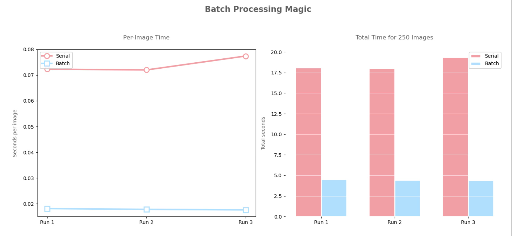

Bird Species Classifier
Built a deep learning pipeline to automatically identify bird species from trail camera images using MobileNetV2. Benchmarked serial vs. batch inference on MSU's HPC cluster, achieving a 4x speedup with batch processing.
More details
Problem
Wildlife monitoring with trail cameras produces large volumes of images that are slow to label by hand. This project explored using a pre-trained CNN to automate bird species identification and evaluated how batch processing compares to serial inference when scaling to thousands of images.
Approach
Applied MobileNetV2 (pre-trained on ImageNet) to 250 bird images. Wrote separate serial and batch inference scripts and ran both on MSU's HPCC via SLURM job scripts. Evaluated accuracy against 20 hand-labeled images and visualized performance results.
Results & Impact
Batch inference completed in 4.43s vs. 18.94s for serial — a ~4x speedup. Top-1 accuracy on labeled images was 15% exact match and 40% within genus/family, consistent with an off-the-shelf ImageNet model not fine-tuned on bird species. Identified fine-tuning on a bird-specific dataset (e.g. CUB-200) as a clear next step.